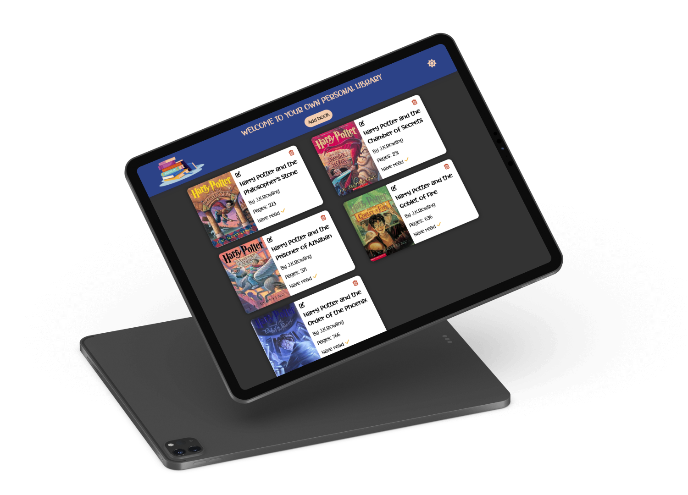

Library project
I make this page, to add, edit and remove books, check if the books has been read or not. As an additional feature you can add an image, if you don't, the mock cover will be chosen.
This project was mostly made in JavaScript.
The design is definitely simple for now, but this is one of the first projects I would like to improve a lot as soon as I get some time.
I found the font that really suits the book theme. And added light and dark option for the background.
I would like to be able to store books, add an API to find books easier, apply some additional features, add a login and improve the design.